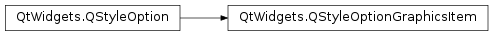

QStyleOptionGraphicsItem¶
Synopsis¶
Static functions¶
- def
levelOfDetailFromTransform(worldTransform)
Detailed Description¶
The
PySide2.QtWidgets.QStyleOptionGraphicsItemclass is used to describe the parameters needed to draw aPySide2.QtWidgets.QGraphicsItem.For performance reasons, the access to the member variables is direct (i.e., using the
.or->operator). This low-level feel makes the structures straightforward to use and emphasizes that these are simply parameters.For an example demonstrating how style options can be used, see the Styles example.
-
class
PySide2.QtWidgets.QStyleOptionGraphicsItem¶ -
class
PySide2.QtWidgets.QStyleOptionGraphicsItem(other) -
class
PySide2.QtWidgets.QStyleOptionGraphicsItem(version) Parameters: - other –
PySide2.QtWidgets.QStyleOptionGraphicsItem - version –
PySide2.QtCore.int
Constructs a
PySide2.QtWidgets.QStyleOptionGraphicsItem.Constructs a copy of
other.- other –
-
PySide2.QtWidgets.QStyleOptionGraphicsItem.StyleOptionType¶ This enum is used to hold information about the type of the style option, and is defined for each
PySide2.QtWidgets.QStyleOptionsubclass.Constant Description QStyleOptionGraphicsItem.Type The type of style option provided ( SO_GraphicsItemfor this class).The type is used internally by
PySide2.QtWidgets.QStyleOption, its subclasses, andqstyleoption_cast()to determine the type of style option. In general you do not need to worry about this unless you want to create your ownPySide2.QtWidgets.QStyleOptionsubclass and your own styles.See also
QStyleOptionGraphicsItem.StyleOptionVersion
-
PySide2.QtWidgets.QStyleOptionGraphicsItem.StyleOptionVersion¶ This enum is used to hold information about the version of the style option, and is defined for each
PySide2.QtWidgets.QStyleOptionsubclass.Constant Description QStyleOptionGraphicsItem.Version 1 The version is used by
PySide2.QtWidgets.QStyleOptionsubclasses to implement extensions without breaking compatibility. If you useqstyleoption_cast(), you normally do not need to check it.See also
QStyleOptionGraphicsItem.StyleOptionType
-
PySide2.QtWidgets.QStyleOptionGraphicsItem.exposedRect¶
-
PySide2.QtWidgets.QStyleOptionGraphicsItem.matrix¶
-
PySide2.QtWidgets.QStyleOptionGraphicsItem.levelOfDetail¶
-
static
PySide2.QtWidgets.QStyleOptionGraphicsItem.levelOfDetailFromTransform(worldTransform)¶ Parameters: worldTransform – PySide2.QtGui.QTransformReturn type: PySide2.QtCore.qrealReturns the level of detail from the
worldTransform.Its value represents the maximum value of the height and width of a unity rectangle, mapped using the
worldTransformof the painter used to draw the item. By default, if no transformations are applied, its value is 1. If zoomed out 1:2, the level of detail will be 0.5, and if zoomed in 2:1, its value is 2.See also
© 2018 The Qt Company Ltd. Documentation contributions included herein are the copyrights of their respective owners. The documentation provided herein is licensed under the terms of the GNU Free Documentation License version 1.3 as published by the Free Software Foundation. Qt and respective logos are trademarks of The Qt Company Ltd. in Finland and/or other countries worldwide. All other trademarks are property of their respective owners.